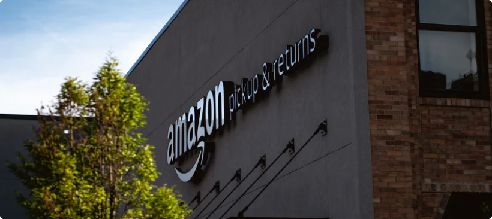
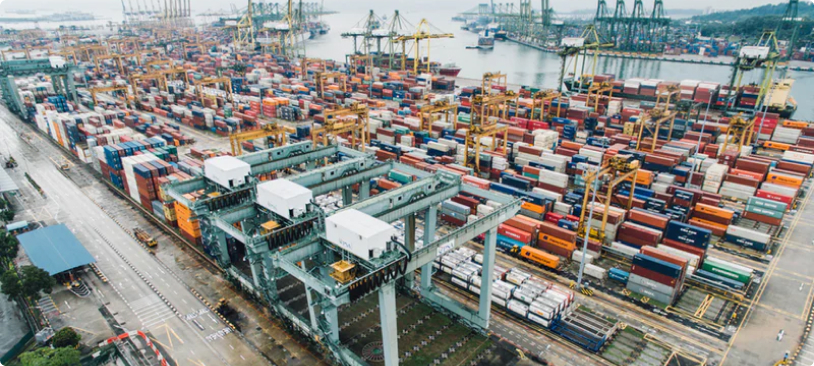

Вернуться назад
5.01.2019
Продажа на Amazon: эффективный бизнес на дистанционном обслуживании
.png)
.png)
Поделились:
439
Amazon – виртуальный торговый сервис. Это крупнейшая мировая площадка для реализации реальных товаров и услуг между странами и даже континентами. Она объединяет продавцов и покупателей, предоставляя для каждой из сторон наиболее интересные и выгодные условия для работы.
Хотите вести бизнес из любой точки мира? Это легко!
Что такое «Амазон»?
Торговля на Amazon ведется с 1995 года и первоначально была ориентирована на торговлю книгопечатной продукции. Сегодня ассортимент реализации насчитывает более чем 34 категорий таких товаров как электроника и детские игрушки, продукты питания и хозяйственные вещи, спортивное снаряжение и автомобильные запасные части, электронные книги и одежда, а также многое другое.
Всего действует восемь филиалов компании, каждый из которых имеет собственную специфику, уровень цен, ассортимент, стоимость доставки. Это отделение в Китае, Канаде, Испании, Германии, Японии, Великобритании, Италии и США (головное подразделение). По масштабам товарооборота, «Амазон» является крупнейшим конкурентом «ИБэя».
Все сделки на ресурсе совершаются только через интернет, поэтому для работы нет необходимости в организации офиса или торгового помещения, что позволяет снижать затраты и предлагать покупателям привлекательные цены.
Кстати, на ресурсе есть специальная система откликов покупателей, которые описывают свои впечатления о сотрудничестве. «Клиенты со стороны» не смогут написать «заказные» рекомендации или антирекомендации. Поэтому если вы дорожите репутацией, ведете честную торговлю на «Амазон», отзывы покупателей помогут вам укрепить деловую репутацию.
Как стать продавцом на Amazon? Для продажи на Amazon обучение не требуется, все довольно просто – если знать некоторые нюансы. Чтобы создать новый аккаунт, вам достаточно пройти регистрацию продавца на Amazon и ввести специальный код. После чего вы сможете выбирать свои листинги, товарные позиции, стоимость изделий, изменять настройки своей учетной записи.
Поэтапно запуск товаров выглядит следующим образом:
• Research – подбор товара;
• Подбор поставщиков продукции;
• Осуществление листинга на Amazon;
• Продажи.
Для создания нового рабочего аккаунта оптимально подбирать адреса электронной почты вне российской зоны – лучше всего yahoo или же gmail. Зарубежный сервис относится к ним более лояльно и не испытывает проблем с верификацией, чего нельзя сказать о зоне с доменом .ru.
Основной ресурс Amazon – американское отделение сервиса Amazon.com, зарегистрировавшись на нем вы получаете доступ ко всему североамериканскому рынку, включая США, Канаду и Мексику. Однако для торговли в Европе потребуется пройти отдельных процесс.
Доступные рынки для продажи на Amazon
Продажи на Amazon Europe стоит начать именно c регистрации на Amazon.co.uk, потому что личный кабинет с сайта британского представительства может использоваться и в других европейских филиалах (Amazon.de, Amazon.fr, Amazon.it).
При этом некоторые из сведений своего аккаунта вы можете сделать доступными для своих покупателей, а некоторую информацию скрыть от посторонних глаз.